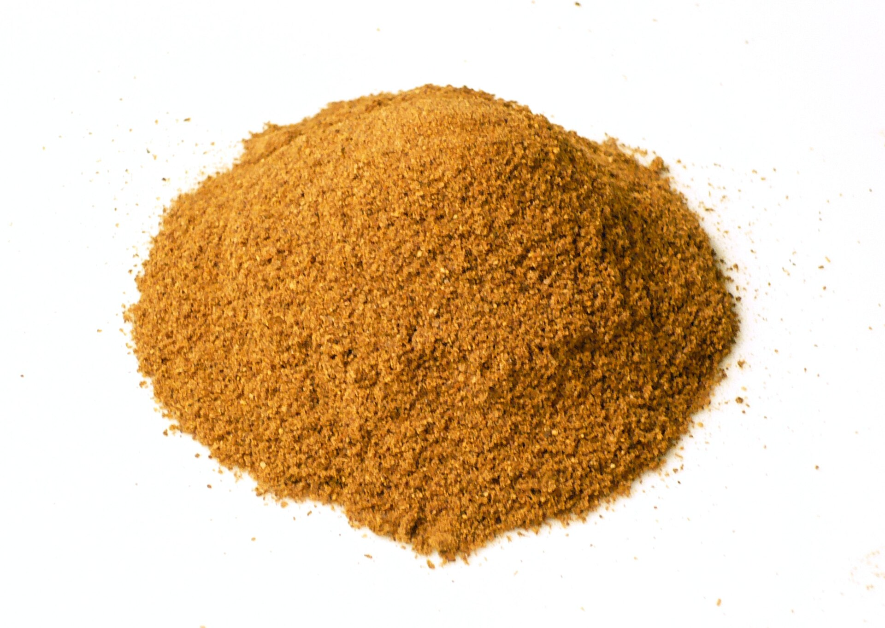
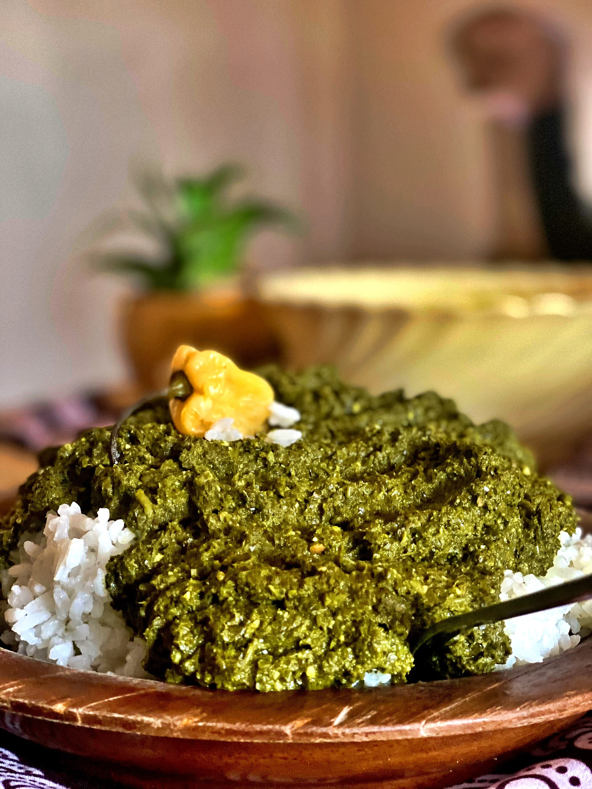
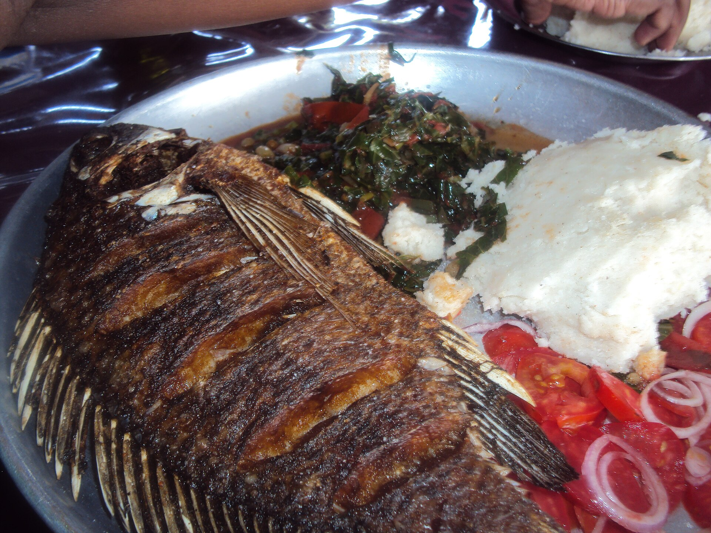
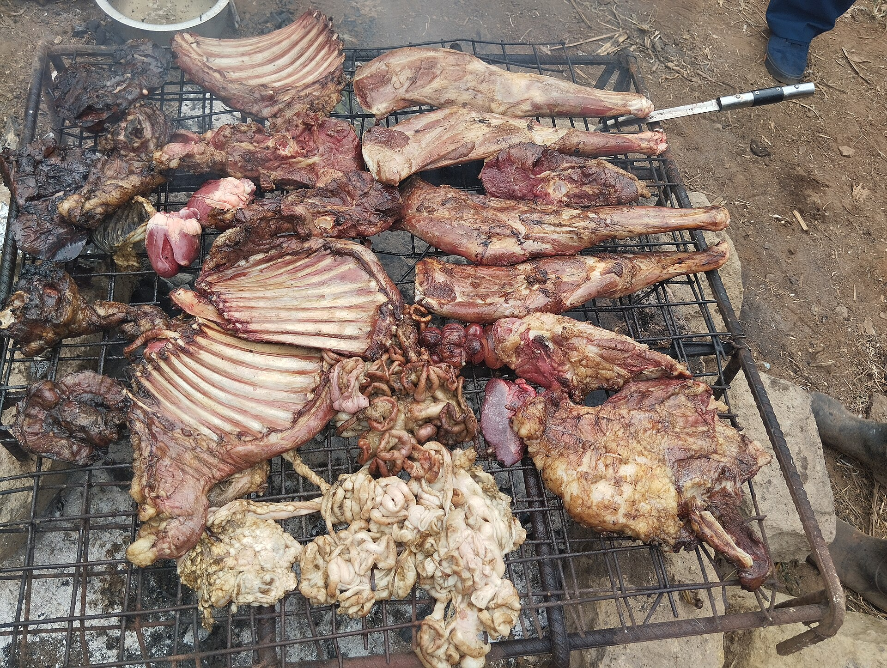

Berbere
Ethiopia's brick-red blend of chilli, fenugreek, ginger, cardamom and more.
From fermented injera in the highlands to spice-scented pilau on the Swahili coast.
East Africa spans the Ethiopian highlands, the Great Rift Valley and the Swahili coast of the Indian Ocean. In Ethiopia and Eritrea, meals are served on injera, a spongy fermented flatbread, with stews spiced with berbere. Further south, maize-based ugali, roasted meats and green bananas (matoke) anchor the table.
Centuries of Indian Ocean trade brought cloves, cardamom and coconut to Zanzibar and Mombasa, giving coastal Swahili cooking dishes like pilau and biryani. Across the region, eating together from a shared platter is a sign of friendship.

Berbere: the soul of Ethiopian cooking.
Teff batter is fermented for days to give injera its tangy flavour and signature 'eyes'.
Onions are cooked down slowly before adding niter kibbeh spiced butter and berbere.
Nyama choma — 'roasted meat' in Swahili — is grilled slowly over charcoal and shared at gatherings.
Pounded cassava leaves are simmered for hours into tender isombe, enriched with peanuts and palm oil.
The aromatics that give East Africa its unmistakable taste.
Ethiopia's brick-red blend of chilli, fenugreek, ginger, cardamom and more.
A fiery bird's-eye chilli blend served alongside kitfo.
Clarified butter infused with spices — the base of countless stews.
Zanzibar, the 'Spice Island', has long been famous for its cloves.
Perfumes Swahili pilau, chai and Ethiopian coffee ceremonies.
Cumin, cardamom, cinnamon, pepper and cloves for coastal rice dishes.
Cards marked Full recipe link to step-by-step instructions.
 East Africa
East Africa
A tangy, spongy teff flatbread that is both plate and cutlery for Ethiopian stews.

East AfricaRwanda's comforting stew of pounded cassava leaves, aubergine, peanuts and palm oil.

East AfricaFirm maize-meal ugali served with garlicky sautéed collard greens — East Africa's daily staple.

East AfricaGoat or beef slow-roasted over charcoal — the centrepiece of East African gatherings.
Explore Nairobi's street food scene — nyama choma, ugali, chapati and more.
Continue your journey: